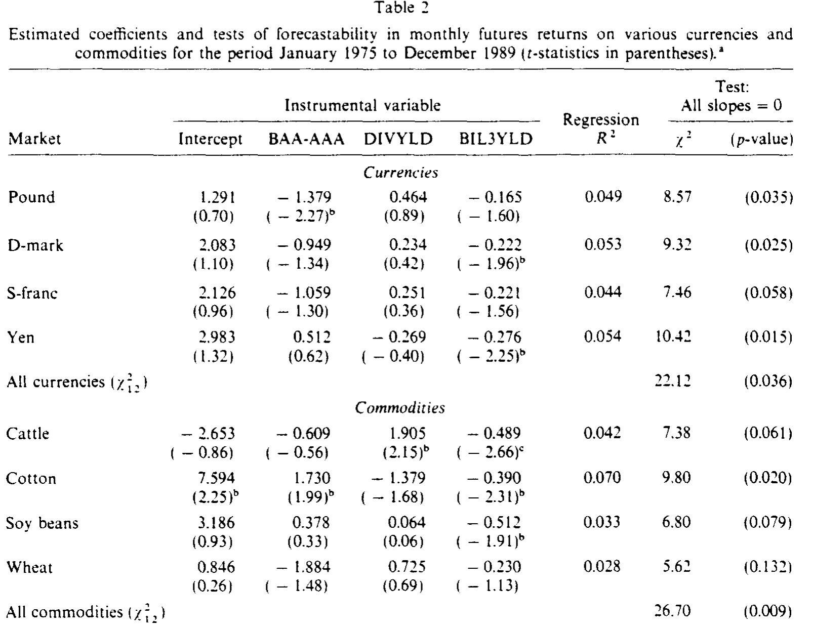
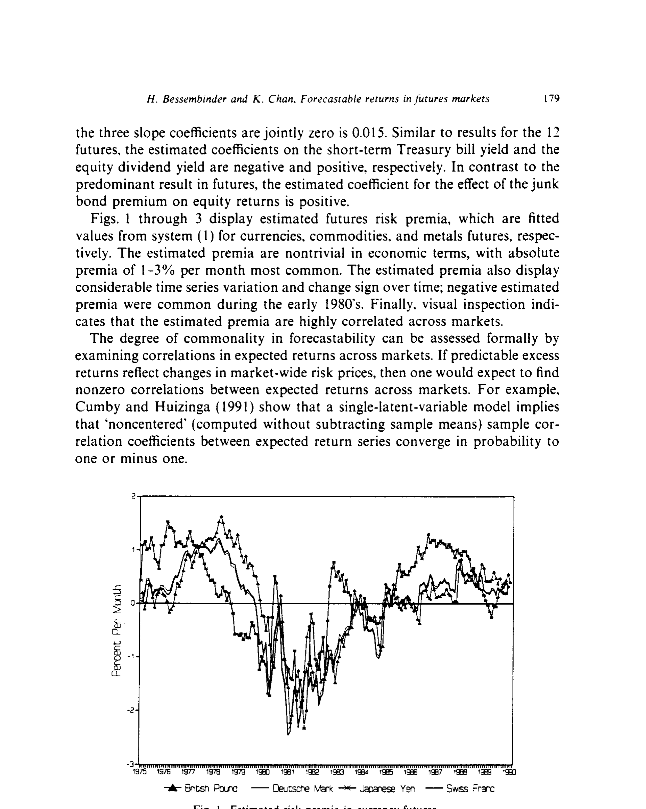
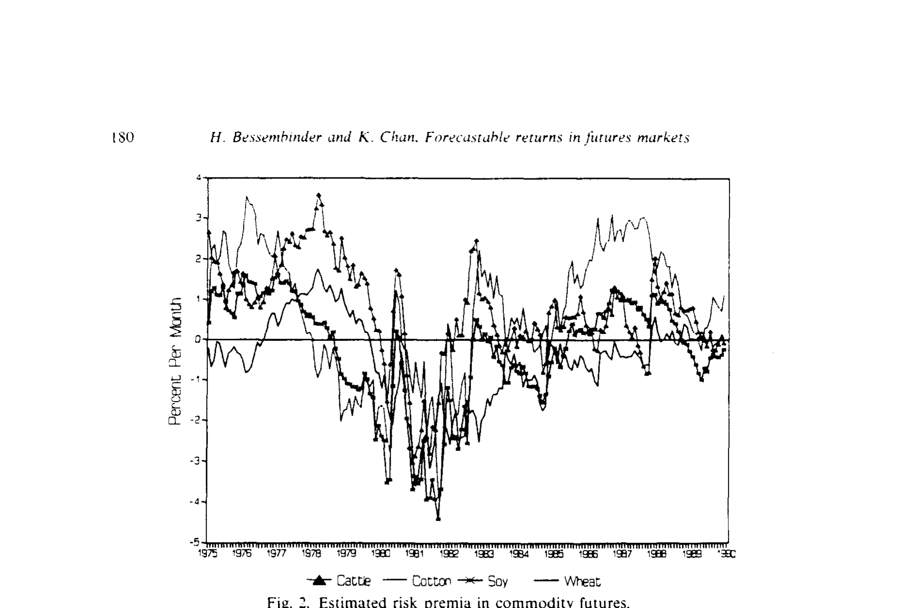
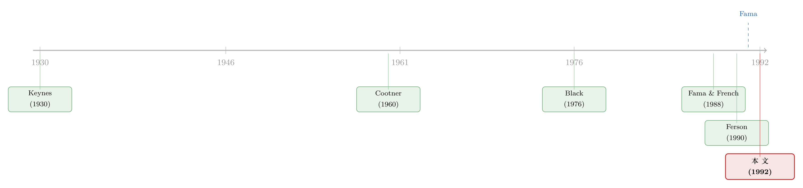

三个『股市指标』，竟能预测黄金和大豆的价格
本文读的是 Bessembinder & Chan (1992, Journal of Financial Economics)：那些在股票和债券市场里早被证明「能预测收益」的工具变量——短期国债收益率、股息率、垃圾债溢价——拿到农产品、金属、货币这 12 个期货市场里，竟然同样有预测力；而且这种可预测性符合一个两潜变量 (two-latent-variable) 的均衡模型。但当作者追问「期货里的这两个潜变量，和股票里的那两个是不是同一对」时，答案是：否。
1 一个让人不太舒服的事实
先说一件在 1990 年前后已经不算新鲜、却始终让人不太舒服的事实：股票和债券的超额收益，是可以被预测的。
用什么预测？无非是几个老面孔——股息率 (dividend yield)、短期利率、违约溢价 (default premium)、期限结构。Fama (1991) 在那篇著名的《Efficient Capital Markets: II》里把这一摊文献做了总结，并且说了一句意味深长的话。他承认，收益可预测这件事，要么反映均衡预期收益随时间变化，要么反映价格对价值的非理性偏离，要么两者皆有。但他在结论里点了一句（p. 1610）：
如果预期收益的变动，源于对偏好或技术的冲击，那么这种变动应当在不同证券、不同市场之间是共同的 (common across different securities and markets)。
这句话其实是一道考题。如果可预测性真的是「风险溢价随经济状态变化」的结果，那它就不该只长在股市这一棵树上——它应该是一种弥散在整个经济里的东西，凡是承担系统性风险的资产，都该被它扫到。
那么，一个最干脆的检验办法是：找一个跟股票八竿子打不着的市场，看看股市里那几个预测变量，到了那边还灵不灵。
期货市场，恰好就是这样一个「八竿子打不着」的地方。黄金、白银、大豆、棉花、英镑、日元——它们的价格凭什么要听「股息率」的话？这就是 Bessembinder 和 Chan 这篇 1992 年论文的起点。
2 期货里到底有没有「风险溢价」
接着，一个自然的问题是：期货价格里，本来就该有可预测的成分吗？
这要回到一个很老的争论。在没有风险溢价、也没有市场无效的世界里，均衡期货价格的变动应当是完全随机的——今天的期货价格已经包含了对到期日现货价的最优预测，剩下的只有噪声。可是经济学家很早就怀疑事情没这么简单。Keynes (1930) 和 Cootner (1960) 提出了「正常贴水 (normal backwardation)」和「升水 (contango)」：套保者为了转移风险，愿意付一笔钱给投机者，于是期货价格会系统性地向上（或向下）漂移。这笔钱，就是风险溢价。
期货和股票有一个本质区别：进场不需要本金。所以在现代的、基于「所有头寸都可自由分散」的均衡定价模型里（Dusak 1973、Black 1976、Breeden 1980、Richard & Sundaresan 1981 等），期货的定价函数里没有「零 beta」截距项——这是它和普通资产最大的不同。但除此之外，逻辑是一样的：期货收益对经济状态变量的敏感度（beta），乘以每个状态变量的市场化因子溢价 (factor premium)，就构成了它的预期收益。
这里有一个关键的研究取舍。预期收益要随时间变，要么是 beta 在变，要么是因子溢价在变。Ferson & Harvey (1991) 发现，在股票里，绝大部分可预测的变动来自因子溢价（风险的价格）在变，而不是 beta 在变；Bessembinder (1992) 自己也发现，期货的 beta 用滚动回归估出来，时间序列上几乎不动。于是本文做了一个干净的设定：假设 beta 恒定，把全部可预测性都归到因子溢价的时间变动上。
在这个框架下，逻辑链就闭合了：如果期货和股票对同一批状态变量敏感，而这些状态变量的因子溢价又有共同的经济决定因素，那么——同一批工具变量，就该既能预测股票，也能预测期货。
3 数据与「收益」的造法
然后，是怎么把这件事变成一个可以回归的数据集。
期货收益的构造看似琐碎，却是这篇论文的细节功夫。作者取 12 个市场，1975 年 1 月到 1989 年 12 月的月度数据：四个金属（黄金、白银、铜、铂）、四个农产品（大豆、小麦、棉花、活牛）、四个货币（英镑、日元、瑞郎、马克）。每个月的「收益」是结算价的百分比变化，用的是月末时离到期最近、但当月没到期的那张合约；定义一笔收益的两个结算价，永远是同一张合约上的相邻观测。直观上，这模拟了一个投资者长期持有最近月合约、在到期前一个月末「滚」到次近合约的真实体验。
这个做法刻意绕开了「现货-期货基差」那一套——后者必须处理存储成本、便利收益这些麻烦事（如 Fama & French 1987 把基差拆成「预期溢价」和「现货价预测变动」两块）。本文直接看价格变化，干净。
三个工具变量，全部滞后一期：(1) CRSP 价值加权指数的股息率（按 Fama & French 1988 的方法去季节性）；(2) 三个月期国债收益率；(3) 一个「垃圾债溢价 (junk bond premium)」，定义为 Moody's 的 BAA 级公司债收益率减去 AAA 级的收益率。三个变量，无一例外，都是因为「在股债市场被证明有预测力」而被选进来的。注意它们全部来自股票和债券市场——没有一个是期货市场自己的变量。这正是检验的要害。
4 识别策略：从「记录现象」到「检验模型」
本文的方法分两层，理解这两层的区别，是读懂全文的关键。
第一层，只记录可预测性。 把一个回归方程组写成
$$ R_t = \Pi\, X_{t-1} + \varepsilon_t $$
这里 \(R_t\) 是 \(N\) 个证券的超额收益向量，\(X_{t-1}\) 是 \(J\) 个工具变量的实现值向量，\(\Pi\) 是系数矩阵（典型元素记为 \(\pi_{ij}\)）。\(\Pi\) 里有非零元素，就意味着收益可预测。 全部估计用的是 Hansen (1982) 的广义矩估计 (generalized method of moments, GMM)——在无约束时，它给出的系数与普通最小二乘 (OLS) 完全相同，但标准误在条件异方差下依然一致。检验「某市场三个斜率是否联合为零」，就是把相应系数约束为零再做 GMM。
第二层，才真正检验一个模型。 这一步要害得多。作者要问：收益的行为，是否符合一个「因子溢价随时间变、但 beta 恒定」的 \(K\) 因子均衡模型？设 \(\beta_{ik}\) 是证券 \(i\) 对第 \(k\) 个状态变量的 beta，模型预测：
$$ E[r_{it}\mid Z_{t-1}] = \sum_{k=1}^{K} \beta_{ik}\, \lambda_{k,t} $$
其中 \(\lambda_{k,t}\) 是第 \(k\) 个状态变量上 beta 风险的市场价格（也可解读为：一个对第 \(k\) 个状态变量 beta 为 1、对其余状态变量 beta 为 0 的「对冲组合」的预期超额收益），它依赖于 \(t-1\) 时刻的信息集 \(Z_{t-1}\)。
但 \(\lambda_{k,t}\) 是看不见的。于是关键的一步来了：假设信息集可以由那 \(J\) 个工具变量代表，且风险价格的预期对信息集是线性的，那么
$$ \lambda_{k,t} = \sum_{j=1}^{J} \gamma_{kj}\, x_{j,t-1} $$
把它代回去，预期收益就变成了可观测工具变量的函数。这两层一拼，就在系统 (1) 的参数上压出了一组可检验的非线性约束：
这个式子是全文的心脏。它说的是：那个原本「自由」的 \(\Pi\) 矩阵，其实不该自由——它的每一个元素 \(\pi_{ij}\)，都必须能被分解成「beta × 风险价格载荷」的形式。如果世界上真的只有 \(K\) 个共同的定价因子，那么 \(N\times J\) 个 \(\pi_{ij}\) 里，只有 \(J\cdot K + (N-K)\cdot K\) 个是自由的，剩下 \((N-K)(J-K)\) 个被锁死了。这些「过度识别 (overidentifying)」约束，就是模型的检验点。
这里有一个绕不开的「联合假设」问题，Wheatley (1989) 早就强调过：潜变量检验是经济定价模型与beta 恒定假设的联合检验。模型被拒绝，可能是因为均衡理论错了，也可能仅仅是因为 beta 其实在动。这一点在解读结论时必须记在心里。
归一化。 既然看不见状态变量，就得归一化：指定前 \(K\) 个证券为「参考证券 (reference securities)」，把 \(\Pi\) 的前 \(K\) 行约束成单位矩阵。当 \(K=1\) 时最直观——令 \(\beta_1=1\)，于是其余 \(\beta_i\) 被解读为「相对于证券一的 beta」。GMM 检验统计量用的是 Hansen (1982) 的定理：\(T\) 乘以最小化后的准则函数值，渐近服从自由度为约束个数 \((N-K)(J-K)\) 的 \(\chi^2\) 分布。统计量小，说明未预期收益与工具变量不相关，模型拟合好；统计量大，就是反对潜变量模型的证据。
5 主要结果：三连击
第一击：期货确实可以被预测。 表 2 是全文的主结果。不加任何约束时，对每个市场检验「三个斜率联合为零」，结果在 12 个市场里有 9 个联合显著（p < 0.10），另外三个也只是略高。分组看：商品期货 p < 0.01、货币期货 p = 0.036，证据很强；金属期货稍弱（p = 0.232）。把全部 36 个斜率一起检验「都为零」，被拒绝，p = 0.012。

Table 2
但同时要诚实：可预测的部分很小。各市场回归 \(R^2\) 只在 0.028 到 0.070 之间。作为对照，同样三个变量对 CRSP 股票超额收益的 \(R^2\) 是 0.105，p 值 0.015。换句话说，预期收益确实在动，但未预期收益的时间变动要大得多。
第二击：符号是「共同」的——正中 Fama 的预言。 这才是把「可预测」上升为「均衡」的关键证据。看表 2 里斜率的符号：
- 短期国债收益率：12 个市场全部为负；
- 股息率：除棉花外，11 个市场为正；
- 垃圾债溢价：9 个市场为负。
每个工具变量在跨市场之间方向高度一致——这正是 Fama (1991) 说的「预期收益的变动应当跨市场共同」。值得玩味的是，垃圾债溢价对股票收益的影响是正的，对期货多数是负的，符号相反。
第三击：风险溢价高度同步。 图 1 到图 3 画出了三组期货的估计风险溢价（即系统 (1) 的拟合值）。这些溢价在经济上并不小——每月 1%–3% 的绝对值最常见——而且随时间剧烈摆动、会变号（1980 年代初普遍为负）。肉眼就能看出它们跨市场高度相关。

Figure I: Estimated risk premia in currency futures
正式地，用 Cumby & Huizinga (1991) 的方法算「非中心 (noncentered)」相关系数：期货预期收益两两之间，66 个相关系数里有 36 个在零以上两个标准误，只有 3 个在 1 以下两个标准误之外；平均非中心相关高达 0.655。这是一个高度一体化的图景。

Figure 2: Estimated risk premia in commodity futures
于是反转出现了。 既然期货之间如此同步，而且股市的指标能预测期货，一个诱人的猜想是：期货和股票，背后是同一套定价因子。 作者顺势检验：先看几个潜变量。结果，单潜变量模型被拒绝，但两潜变量模型不被拒绝——这和 Ferson (1990) 在股票里发现「两个潜变量」遥相呼应。
那么最后一问：期货里的这两个潜变量，和解释规模分组股票组合收益的那两个潜变量，是同一对吗？
这个假设被拒绝了。 含义很尖锐：要么股票市场与期货市场在某种程度上是分割 (segmented) 的，要么——更可能——期货承担的，是与股票不同来源的「被定价的风险」。股市的指标能预测期货，不是因为它们共享同一台定价引擎，而更像是这些指标本身携带了某种弥散在整个经济里、连接不同风险源的信息。
6 文献脉络
把这条线捋一捋，会看得更清楚。
最早的源头是 Keynes (1930) 和 Cootner (1960)：期货溢价是套保需求的产物。接着是 1970–80 年代的均衡定价模型——Dusak (1973)、Black (1976)、Breeden (1980)、Richard & Sundaresan (1981)——把期货溢价归结为「beta × 因子溢价」，并指出期货没有零 beta 截距。与此并行，股债市场的「可预测性」文献蓬勃生长：Keim & Stambaugh (1986)、Campbell (1987)、Fama & French (1988, 1989) 一步步把股息率、利率、违约溢价确立为预测变量。
真正给本文搭好脚手架的是两篇：Fama (1991) 提出「可预测性若是均衡的，就该跨市场共同」这一可证伪的命题；Ferson (1990) 则把「潜变量模型」用到股票上，发现需要两个潜变量。本文的位置，就在这两者的交汇处——它把可预测性文献的工具，搬到期货这个「外部样本」上做了一次跨市场的压力测试，并用潜变量框架追问「是不是同一批因子」。

（关于「贴现率/预期收益变动才是资产定价的中心议题」这条大线索，可参见《贴现率：资产定价的中心议题》；关于这些预测变量后来「会不会失灵」的争论，见《风险溢价，是「消失」了，还是「断」掉了？》；而货币期货的可预测性后来又被重新审视，见《货币动量的真身：它不过是因子在「重复自己」》。）
7 评论与延伸（Q&A + 研究方向）
(a) 几个可能的疑问
Q：\(R^2\) 只有 0.03–0.07，这点可预测性，真有意义吗？
有，但要看从哪个角度。从「能不能据此赚大钱」看，未预期收益远大于预期收益，单月 \(R^2\) 低得可怜。但从「检验市场效率/均衡理论」看，重要的不是 \(R^2\) 的大小，而是斜率的符号是否跨 12 个市场系统性一致——后者才是 Fama 命题的检验点，而它确实成立了。低 \(R^2\) 与「显著的、共同的可预测性」并不矛盾。
Q：期货收益和股票收益的同期相关其实很低，怎么还能说「股市指标预测期货」？
这正是本文最微妙处。表 1 显示，已实现期货收益与 CRSP 股票收益的同期相关很低，只有两个金属市场显著。但作者明确指出：已实现收益的低相关，并不排除预期收益的高相关。 可预测性住在「预期收益」里，而预期收益的非中心相关平均高达 0.655。两件事不是一回事。
Q：潜变量模型被拒绝，到底是经济理论错了，还是 beta 在动？
无法区分——这就是 Wheatley (1989) 强调的联合假设问题，作者自己也承认。本文的辩护是间接的：Ferson & Harvey (1991) 和 Bessembinder (1992) 的证据都指向「beta 相对稳定、因子溢价才是变动来源」。但这是一个维持假设 (maintained hypothesis)，不是被本文证明的结论。读者有理由保留一份怀疑。
Q：「期货与股票的潜变量不同」，是不是只能说明两个市场分割？
不一定。作者给了两种解读：市场分割，或者期货承担了不同来源的被定价风险。后者其实更耐人寻味——它意味着即便市场是一体的，期货也可能对一些「股票组合里照不到」的状态变量敏感（比如与实物商品、存储、产出相关的冲击）。论文止步于「拒绝同一性」，没有进一步指认那两个因子是什么，这是它留下的空白。
Q：用「股市变量」预测期货，会不会只是数据窥探 (data snooping)？
这是合理的担忧，但本文的设计恰恰削弱了它：三个工具变量不是从期货数据里挑出来的，而是从独立的股债文献里「拿来」的——这是一种样本外检验的精神。再加上跨 12 个市场、跨三个资产组的符号一致性，纯属偶然的概率不高。
Q：为什么垃圾债溢价对股票是正号、对期货多为负号？
论文没有给出机制性的解释，只是报告了这个符号反转。一个可能的方向是：垃圾债溢价是经济状况的代理（坏时期它升高），而期货（尤其商品）与股票在「坏时期」的风险暴露方向可能相反。这是个开放问题，本文没展开。
(b) 几个可能的研究问题与提案
1. 把这套检验搬到公司债 / 信用市场。
【经济故事】本文证明了股市指标能预测期货，且二者潜变量不同。一个自然的延伸：垃圾债溢价本身就是工具变量之一，那么公司债的超额收益，是否也由「与股票不同」的潜变量驱动？信用市场介于股与债之间，正是检验「市场分割 vs. 共同因子」的理想战场。 【可行性】高。数据可用（TRACE、Merrill/ICE 指数），潜变量 GMM 框架可直接复用。识别上需注意公司债的流动性溢价污染——可借鉴按交易量调整的流动性度量。
2. 重估「期货的两个潜变量是什么」。
【经济故事】本文止于「拒绝与股票相同」，却没指认期货那两个因子的经济身份。用 30 年后的数据和已发展成熟的商品因子（carry、momentum、basis-momentum）去「命名」这两个潜变量，是一个干净的接力。 【可行性】中。数据充足，但潜变量本身不可观测，要把它和可观测因子对齐需要额外假设；存在「因子动物园」式的过拟合风险。
3. 时变 beta 会不会救活单潜变量模型？
【经济故事】本文的硬约束是「beta 恒定」。如果允许 beta 随经济状态平滑变动（如 Ferson & Foerster 1992 的方向），被拒绝的单/双潜变量结论会不会翻案？这直接针对 Wheatley 的联合假设批评。 【可行性】中。需要可观测的状态变量来参数化 beta 的动态，否则识别困难；条件矩 GMM 在小样本里的有限样本性质也需谨慎（Ferson & Foerster 1991 已警示）。
4. 外资持有人与商品期货溢价的同步性。
【经济故事】本文发现期货风险溢价跨市场高度同步（平均相关 0.655）。2004 年后的「商品金融化」把大量机构与跨境资金引入期货，一个问题是：这种同步性是否随外资参与度上升而增强？这会把「时变风险溢价」和「投资者基础变化」连起来。 【可行性】中。CFTC 的持仓报告 (COT)、跨境资金流数据可用；难点在于把「外资参与」与「风险溢价同步」之间的因果分离出来，需找外生冲击（如指数纳入、监管变动）。
参考文献
- Bessembinder, H. (1992). Systematic risk, hedging pressure, and risk premiums in futures markets. Review of Financial Studies (forthcoming).
- Black, F. (1976). The pricing of commodity contracts. Journal of Financial Economics 3, 167–179.
- Breeden, D. (1980). Consumption risk in futures markets. Journal of Finance 35, 503–520.
- Campbell, J. Y. (1987). Stock returns and the term structure. Journal of Financial Economics 18, 373–399.
- Cootner, P. (1960). Returns to speculators: Telser versus Keynes. Journal of Political Economy 68, 396–404.
- Cumby, R. & Huizinga, J. (1991). Investigating the correlation of unobserved expectations. Working paper, University of Chicago.
- Dusak, C. (1973). Futures trading and investor returns: An investigation of commodity market risk premium. Journal of Political Economy 81, 1387–1406.
- Fama, E. (1991). Efficient capital markets: II. Journal of Finance 46, 1575–1617.
- Fama, E. & French, K. (1987). Commodity futures prices: Some evidence on forecast power, premiums, and the theory of storage. Journal of Business 60, 55–73.
- Fama, E. & French, K. (1988). Dividend yields and expected stock returns. Journal of Financial Economics 22, 3–26.
- Fama, E. & French, K. (1989). Business conditions and expected returns on stocks and bonds. Journal of Financial Economics 25, 23–49.
- Ferson, W. (1990). Are the latent variables in time-varying expected returns compensation for consumption risk? Journal of Finance 45, 397–429.
- Ferson, W. & Harvey, C. (1991). The variation of economic risk premiums. Journal of Political Economy 99, 385–415.
- Hansen, L. (1982). Large sample properties of generalized method of moments estimators. Econometrica 50, 1029–1054.
- Hansen, L. & Singleton, K. (1982). Generalized instrumental variables estimation of nonlinear rational expectations models. Econometrica 50, 1269–1286.
- Keim, D. & Stambaugh, R. (1986). Predicting returns in the stock and bond markets. Journal of Financial Economics 17, 357–390.
- Keynes, J. (1930). A Treatise on Money, Vol. 2. Macmillan, London.
- Richard, S. & Sundaresan, M. (1981). A continuous time equilibrium model of commodity prices in a multigood economy. Journal of Financial Economics 9, 347–371.
- Roll, R. (1977). A critique of the asset pricing theory's tests, Part I. Journal of Financial Economics 4, 129–176.
- Wheatley, S. (1989). A critique of latent variable tests of asset pricing models. Journal of Financial Economics 23, 325–338.